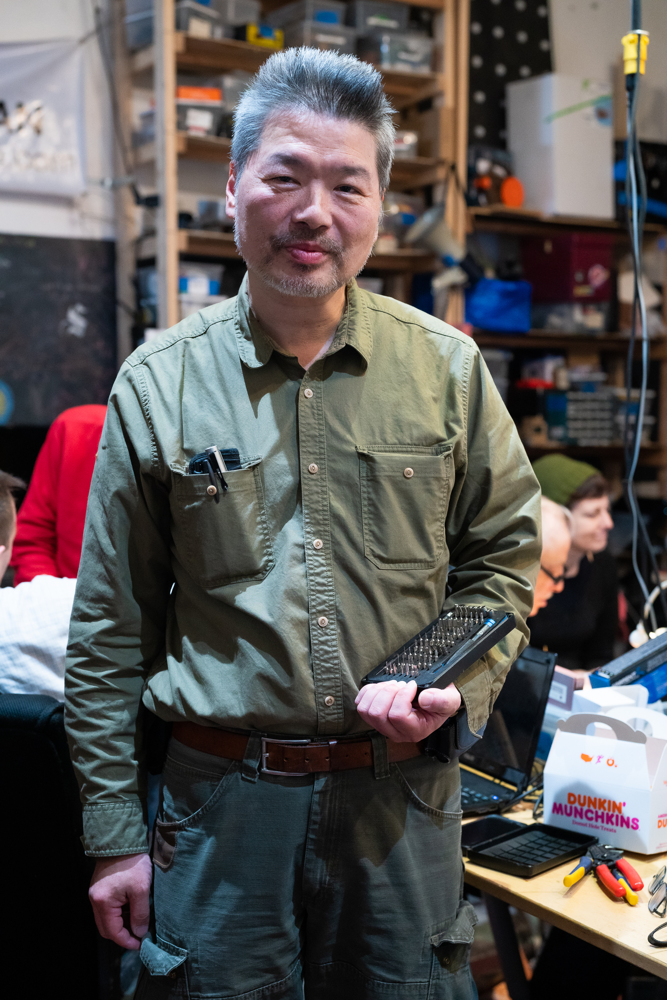

The Fixers' Collective
How one group of New Yorkers is reducing waste and saving the objects we love.
New Yorkers throw out nearly 10,000 tons of trash each day.
Over the course of a year, that’s 3.6 million tons of garbage—the same as 16,000 Statues of Liberty.
The Fixers’ Collective is trying to change that.
They are a small group of New Yorkers who get together to repair broken items, rather than tossing them to the curb. With New York City aiming for zero waste by 2030 this group is doing its part to contribute to these efforts, and they have made a community out of doing so.
“The Fixers’ Collective is an ongoing social experiment in improvisational fixing and aggressive asset recovery,” says Vincent Lai, who runs the group. “So we just get together on a regular basis and help people fix their stuff.”
On a Wednesday evening, the group met at Hack Manhattan, a member-run, community tech space on West 14th Street.
The second-floor makerspace feels part garage workshop and part art classroom. Floor to ceiling shelves are packed with labeled boxes, tools hang neatly from peg boards and a large table in the center is a mess of wires and power cords.
The Collective started in 2008 as an art exhibition at Proteus Gowanus Gallery, focusing on the theme “mend.” The exhibition explored the skills and tools of repair and included a public fix-it workshop in the back of the gallery.
“After the exhibition season finished up people still wanted to fix stuff. So they were meeting on a regular basis and we've been doing it ever since,” says Lai.
The fixers, as they refer to themselves, come with a variety of backgrounds: mechanical engineers, I.T. specialists, a sound man, even a retired rabbi. What brings them together is a love of tinkering.
Lai joined the Collective in 2010, but his love of tinkering goes back to the dot-com boom, when he used to buy damaged products, then repair and sell them for a profit.
The most memorable item he has ever fixed was his parents’ television, which still sits in their kitchen, almost ten years later.
“Every time I visit them, they're watching soap operas on a T.V. that I fixed. I think about that a lot,” said Lai.
“Every time I visit them, they're watching soap operas on a T.V. that I fixed. I think about that a lot,” said Lai.
The group meets twice monthly—once in Manhattan and once in Brooklyn—and is open to the public. Their drop-in visitors hear about the meetups on social media or by word-of-mouth and show up wielding their wounded toasters, vacuums and lamps, once even a theremin. For a small donation, they can have their item fixed and even learn something.
“We want to make it as interactive as possible,” said Lai. “So if you're comfortable enough, we'll put you to work.”
“We want to make it as interactive as possible,” said Lai. “So if you're comfortable enough, we'll put you to work.”
Gail Mayer came to the Fixers meetup in Brooklyn with a portable speaker that hadn’t worked in years. Rather than sitting back and watching, she rolled up her sleeves and learned to solder.
Instead of throwing away, or even recycling her items, she prefers to make them last.
Instead of throwing away, or even recycling her items, she prefers to make them last.
New Yorkers recycle 2,026 tons of metal, glass and plastic each day, but recycling can be expensive and it’s not always clear where the materials end up.
“We can recycle a lot of things now, or we think we can, but I think there's more knowledge coming out about how recycling really isn't as good as we all have you been told that it is,” said Mayer. “A lot of things that we think are getting recycled maybe aren't and probably end up in the landfill, also.”
And electronics are among the hardest items to recycle.
“People are starting to realize that it needs to be treated more like toxic waste,” said Lai.
And because of the money and expertise it takes to repair specialized electronics, they are thrown way often.
“People are starting to realize that it needs to be treated more like toxic waste,” said Lai.
And because of the money and expertise it takes to repair specialized electronics, they are thrown way often.
But a new state law could actually make it easier for the Fixers to repair electronics.
The Digital Fair Repair Act would require manufacturers to provide access to the service information, software, tools and spare parts to repair their products.
The Digital Fair Repair Act would require manufacturers to provide access to the service information, software, tools and spare parts to repair their products.
“Everything will eventually wind up in a state of disrepair or disuse. So the question becomes, well, what do we do with it?” said Lai.
“The best way to preserve a sustainable and green lifestyle is to take care of what you already have, and to preserve it as long as possible to make it live and use it as long as possible,” said Lai
Sheela Lambert’s bedside lamp had been broken for weeks. It was handmade by a local artist and she didn’t want to throw it away.
“This is super cool,” said Lambert. “You're saving stuff from going in the garbage and the landfill.”
“This is super cool,” said Lambert. “You're saving stuff from going in the garbage and the landfill.”
While the Fixers’ Collective helps to divert waste from the landfill, for many people the draw goes beyond that.
“A lamp is really just a cord, a plug and a socket, but that lamp could have been in the family for several generations,” said Lai. “Sentimentality is what brings people here, to preserve and uphold the value of the things that they love in their house.”
“A lamp is really just a cord, a plug and a socket, but that lamp could have been in the family for several generations,” said Lai. “Sentimentality is what brings people here, to preserve and uphold the value of the things that they love in their house.”
HELLO